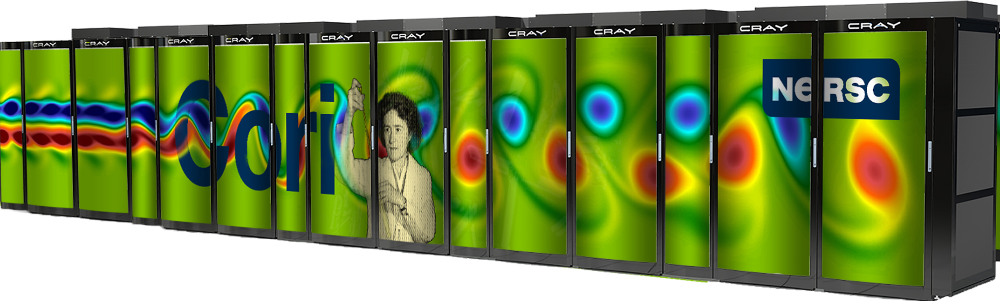

Portability Across DOE Office of Science HPC Facilities¶
As the HPC community prepares for exascale and the semiconductor industry approaches the end of Moore's Law in terms of transistor size, we have entered a period of time of increased diversity in computer architecture for HPC with relatively new designs joining mature x86, DDR standard processor and memory technologies. These technologies include GPUs, Many Core Processors, ARM, FPGA and ASICs as well as new memory technology in the form of High Bandwidth Memory (HBM) often incorporated on the processor die as well as Non-Volatile memory (NVRAM) and Solid-State Disk (SSD) technology for accelerated IO.
The DOE Office of Science operates three world leading HPC facilities located at the Argonne Leadership Computing Facility (ALCF), National Energy Research Scienctifc Computing Center (NERSC) at Lawrence Berkeley Lab and the Oak Ridge Leadership Computing Center (OLCF). These facilities field three of the most powerful supercomputers in world used by scientists throughout the DOE Office of Science and the world solving a number of important science problem in domains from materials science and chemistry to nuclear, particle and astrophysics.
These facilities have begun the transition for DOE users to energy-efficient like architectures. The facilities are currently fielding systems with two-distinct "pre-exascale" like architectures that we discuss in detail on the subsequent pages:
| System | Titan |
|---|---|
| Location | OLCF |
| Architecture | CPU + GPU |
| Scale | 16,000 Nodes |
| Picture |  |
| System | Cori |
|---|---|
| Location | NERSC |
| Architecture | Many Core |
| Scale | 9688 Nodes |
| Notes | SSD Burst-Buffer IO layer |
| Picture |  |
| System | Theta |
|---|---|
| Location | ALCF |
| Architecture | Xeon-Phi |
| Scale | 2500 Nodes |
| Picture |  |
The two processor architectures deployed on these systems are the CPU+NVidia GPU hybrid architecture on Titan and the "self-hosted" Xeon-Phi processors (code named "Knights Landing"). These two architectures, while seemingly quite different at first appearance, have a number of similarities that we believe represent general trends in exascale like architectures:
- Increase parallelism (Cores, Threads, Warps/Blocks)
- Vectorization (AVX512, 32 Wide Warps)
- Small Amount High-bandwidth Coupled with Large Amounts of Traditional DDR
While the details of the architectures are distinct and vendor specific programming libraries/languages (CUDA, AVX512 Intrinsics etc.) exist to address specific architecture features; the commonalities are significant that a number of portable programming approaches exist for writing code that supports both architectures.
This living website is intended to be a guide for applications teams targetting systems at multiple DOE office of science facilities. In the below pages, we discuss in detail the differences between the systems, the software environment and job-submission process. We discuss how to define and measure performacne portability and we provide recommendations and case studies for the most promising performance-portability pogramming approaches.
As an additional valuable resource, the Centers of Excellence from DOE facilities in both the Office of Science and the National Nuclear Security Agency (NNSA) have coordinated an annual meeting with a detailed report of findings available here).